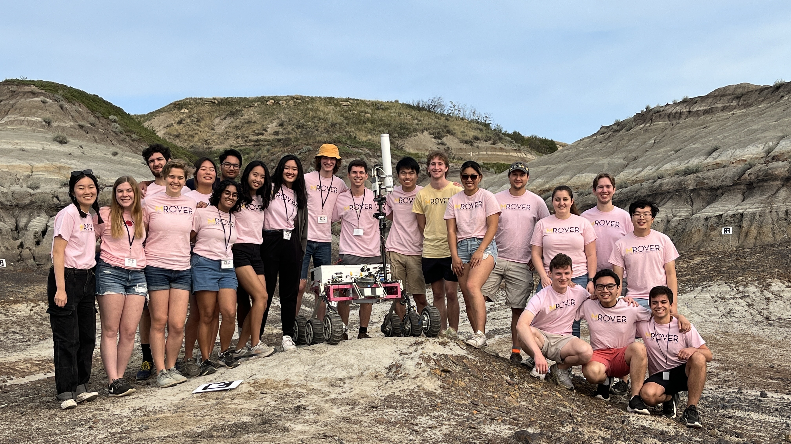

Senior Capstone Project - Dolphin Enrichment Device. Client facing project, full electro-mechanical design cycle from problem definition to verification

The Michigan Mars Rover Team (MROVER) is a student-run project team at the University of Michigan. We have a yearly design cycle to design a new Mars rover for two international competitions, University Rover Challenge (URC) and Canadian International Rover Challenge (CIRC). While our rover is not designed for space, it is meant to withstand a rocky mars like terrane and perform functions that it would need on Mars, such as sample acquisition, on-board science testing, autonomous traversal, search and rescue of objects, and robotic arm dexterity to press button sequences.
The Chassis and Mounts subteam was in charge of designing the chassis frame that all other subsystems were integrated into. We also designed the mounting scheme for each of the different sub systems. The chassis subteam communicated with all of the other mechanical branches very frequently during the design process. We also were in charge of designing the mounts and cases for any electrical components. We used Siemens NX CAD software to design the Rover. That included the 3D printed cases for the components in the electrical box, the camera gimbels, mast, and battery mount.
We machined 95% of our mechanical parts in house. I machined using the manual mill and lathe. I created engineering drawings from the CAD models to have the precise measurements needed to sucessfully machine each part. I set up jigs to machine some hard to hold parts, such as the T bar used in the chassis or irregular shaped mounts. Having the chance to machine the parts that I designed was a great experience because it showed me first hand some of the pitfalls that make a design much harder and more expensive to machine, some problems that you can’t see from the computer.
As a senior member, I had been asked to help inegrate new members into the subteam. Aiding with their introduction to the teams softwares and training helped me get more comfortable with teaching others.
As the treasurer, I managed a nearly $100,000 budget for 80 members, led meetings with subteam leads to ensure that we met our financial goals, and maintained buffers of $15,000 while leaving around $20,000 for the next year’s design cycle. Our team ran off of a mix of corporate sponsorships and university grants. I formed and maintained good working relationships with the university contacts who we worked closely with to manage the team finances and secure future funding for the team.
The other role the treasurer took on was travel lead for our two competitions. I organized the lodging and transportation of the team for the University Rover Competition and the Canadian International Rover Competition and managed the logistics to make the trip run smoothly.
I learned an immense amount during my time as treasurer and I found that juggling a lot of smaller tasks, such as managing the purchases, tracking sponsorships, communicating with the university liaisons, and planning a competition trip, meant that details can fall through the cracks. To prevent this for future treasurers, I standardized the tracking of each subteams bill of materials, implemented a new marketside invoice option, improved the transition of leadership positions, and aided in the standardization of the training of the future treasurer.
Senior Capstone Project - Dolphin Enrichment Device. Client facing project, full electro-mechanical design cycle from problem definition to verification

Imagineering Internship Project Animatronic design, from concept to 30% design review. Solidworks modeling.

Bottle Rocket developing a reusable rocket that can land in a predetermined location and creating an emperical model in Matlab to predict the launch
I am currently open to work and would love to hear about any opportunities. Please do not hesitate to reach out!